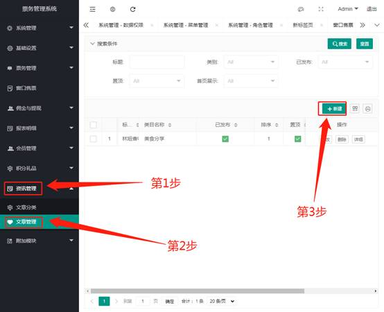
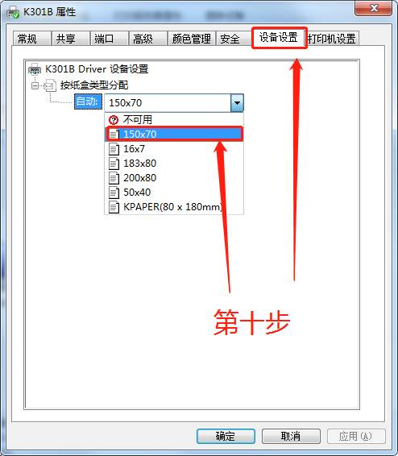

自助售票机（SSM）配置与使用指南
自助售票机（Self-service Machine, SSM）是智慧票务系统中重要的线下门票销售渠道，能有效分流高峰期购票人群，节省人力成本。目前自助机支持扫码支付、刷身份证购票等多种便捷功能。
一、 初次使用设置（本机操作）
重要： 全新或重置后的自助机必须先设置正确的后台服务器地址，否则无法连接票务系统，不能正常售票。
在自助机软件首页，点击右下角的“管理/设置页面”按钮。 不同版本页面与示例图可能不一致，不影响使用

在弹出的数字键盘中，输入管理员密码
82112711，点击“确定”。
进入设置页面后，在“服务器地址”栏中，输入您的后台服务器IP地址或域名，然后点击“保存”。

二、 后台参数配置
完成自助机本机设置后，还需要在票务系统后台进行相关参数配置。
1. 基础参数设置
登录票务系统后台，找到相应自助机的设备管理页面，进行基础参数的配置。


2. 可售门票设置
此项设置决定了这台自助机可以出售哪些门票。
- 在后台管理系统中，导航至 票务管理 -> 售票设置。
- 找到“自助机”售票渠道，点击“修改”。

- 在弹出的窗口中，勾选所有希望在这台自助机上销售的门票，然后保存。

3. 屏幕内容设置（资讯轮播）
此功能用于设置自助机首页的轮播广告图或资讯内容。
创建资讯内容：
- 在后台导航至 资讯管理 -> 文章管理，点击“新建”。
- 填写文章标题、选择分类、上传封面图和内容图文。 
- 完成后，建议将该文章“置顶”，以方便后续选择。

关联资讯到自助机：
- 回到自助机的“参数设置”页面。
- 在“展示资讯”或类似选项中，选择刚刚新建的文章或图片。
- 提交并保存设置。
最终效果： 自助机首页将轮播显示您所设置的资讯内容。

三、 硬件配置
票据打印机设置（以励能打印机为例）
以下步骤为在Windows系统中设置票据打印机的通用流程。
在Windows中打开“设备和打印机”。

在窗口空白处右键，选择“打印机服务器属性”。
在“窗体”标签页，勾选“创建新窗体”，根据您的票纸实际尺寸（如 80mm * 120mm），设置一个新的规格，并保存窗体。

右键点击您的打印机图标，选择“打印首选项”。

在“页面设置”中，选择您刚刚创建的纸张规格。

右键点击打印机图标，选择“打印机属性”。

在“设备设置”标签页中，将“纸张来源”等选项也设置为您创建的新规格，然后保存。 
完成以上所有设置后，打印一张测试页，检查票据是否能按预设的规格正确打印。